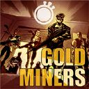
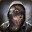
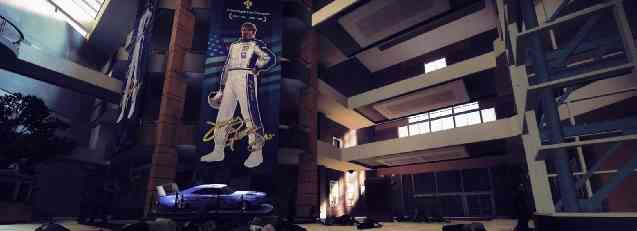
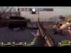
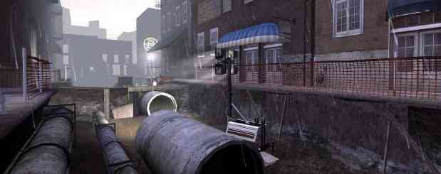
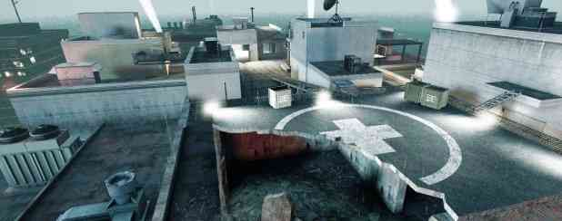

ストア
コミュニティ
Maiko
Steamとは
サポート
Steamをインストール
Eメーリ
ストアページ
Left 4 Dead 2
全て
話題
スクリーンショット
作品
NEW!
ブロードキャスト
ムービー
ワークショップ
ニュース
お知らせ
ガイド
レビュー
オリジナルURL: http://steamcommunity.com/sharedfiles/filedetails/?id=122543624 英辞郎 訳2015-02-14
Left 4 Dead 2
>
ガイド
>
gygyが作成したガイド
149 人が評価

Gold Miners L4D2 サバイバルガイド
作者： gygy と 2 のコラボレーション
このガイドはLeft 4 Dead 2のサバイバルモードで使われるさまざまな戦略を徹底的に説明します。 それはもともと、Gold Minersグループ(サバイバルプレイヤーの国際的グループ)のものです。 ガイドは各マップのための戦略の説明とビデオを含みます。
レート
お気に入り
お気に入り
お気に入りから削除
共有
このアイテムがあなたの
お気に入り
に追加されました。
作成者：
Licksore
全ての共有ファイルを表示する
gygy
全ての共有ファイルを表示する

Azimuth
全ての共有ファイルを表示する
カテゴリ:
Co-op
,
Game Modes
,
Gameplay Basics
,
Maps Or Levels
,
Multiplayer
,
Walkthroughs
Languages:
English
Game Modes:
Survival
投稿日：
更新日：
2013年1月25日 1時43分
2014年12月30日 17時11分
5,147
訪問者数
150
現在のお気に入り
2 人のフレンドがお気に入りに追加しました
ガイド目次
概要
Introduction [はじめに]
Core Concepts [中心的な概念]
Weapons [武器]
Mall Atrium [アトリウム]
Mall Atrium (continued) [(つづき)]
Motel [ハイウェイ]
Stadium Gate [納屋(Barns)]
Concer [コンサート]
Gator Village [木材工場]
Plantation [プランテーション]
Sugar Mill [砂糖精製工場]
Burger Tank [工場町]
Bus Depot [公園]
Bridge [橋]
Riverbank [川岸]
Underground AKA Bedlam [地下]
Port (Passing) [港]
Traincar [電車]
Port (Sacrifice) [港]
Generator Room [発電室]
Rooftop [屋上]
コメント
はじめに
サバイバルモードは、何度も繰り返してプレイできる激しく挑戦的で楽しいゲームプレイを提供しています。 しかしそこにはたくさんのチームワークと戦略が要求されます。 以下のガイドは、グリッチ、エクスプロイト、またはチートの使用に頼ることなく、すべての公式Left 4 Dead 2サバイバルマップ上で金メダルを達成するために使用される戦略を発展、改善するために継続的な作成中です。 それはすべてのスキルレベルのプレイヤーを対象にしていますが、あなたが志を同じくする人々のチームを見つけることをお勧めします、そうでなければあなたは目標を達成するのにいくつかの問題をかかえるでしょう。
個々のマップ/戦略は以下を含みます:
- アイテム情報/数量
- ポジション(画像表現で)
- 何に気をつけるべきかという注意とそのマップ特有のヒント
- 各戦略に関連する動画
感謝
この文書を編集してくれて、マップ解説の多くを提供してくれたLicksoreに、また、Azimuth、sauce、TheKevSham、映像コンテンツ制作者、および貢献をしてくれた他の誰にも感謝します。
中心的な概念
弾薬補給
タンクの攻撃の波には途切れがあります。これらの途切れは弾薬補給へ走るチャンスです。時間:
1:30
2:30 (任意)
4:00
6:00
9:00
12:00
これらの途切れはタンクがいつ出現していつ死ぬかに依存します。 タンクが遠くで出現する場合弾薬補給の邪魔をするかもしれません。タンクを十分速く倒せなかった場合も同様です。 12:00以降弾薬補給に走ることは絶対ではありません、そしてタンクはほとんど連続的に来ます。
タンク出現
0:40
1:55
2:55
4:25
5:25
5:35
7:05
7:45
8:25
10:05
10:45
11:20
11:30
12:50
ここ以降、タンクの出現はマップ全体とラウンドで一貫していません、しかし1分間に1-2体のタンクがいつでも出現すると仮定してプレイします。 同時に出現しているタンクの最大数が2であることにも注意してください、そして特殊感染者(ハンター、スモーカー、チャージャー、ジョッキー、スピッター、ブーマー)の最大数は7です。
いつ回復するべきですか
回復する正確な時間は個人的な基準です、しかしそれはゲームの結果に大いに影響を及ぼします。
ピル、アドレナリン、キット
ピルは一時的なヘルスを与えますが、即座に使用されます、ところがキットは永久のヘルスを与えて、使用に時間がかかります。 ヘルスが低い、そして回復する十分な時間があるときキットを使用するべきです。 ピルはあなたが行動不能にされるのを防ぐために追加の強化を必要とする非常事態のときに使うべきです。
L4D2ではアドレナリンを使う選択肢もあります。 アドレナリンは生存者のすべての動作の速度に即座の強化を与えます。 それは特殊感染者を上回って、より速く生存者を救助することができます。 しかし、それはあなたのヘルスに大きなボーナスを与えません。 アドレナリンは、複数の生存者が行動不能になる、または、緊急脱出が必要であるような重要な時のために取っておかれなければなりません。 それは通常の治療目的のために使うべきではありません。
心に留めておくべき他のもの
一般的な認識はL4D2に不可欠です。あなたの周囲の状況、チームメイト、これからの脅威に、用心深く気づいていてください。 タンクがどこでいつ出現するか、背後にまたはまだ見えないところに脅威があるかどうか、 チームメイトが困っているなら彼らがどこにいるか知ることを、指向性サウンドを手がかりにしてください。 よりよく感染者を聞くために、できるなら音楽を消してください。
マップの知識はあなたの記録を向上するのに間違いなく最も重要な要因です、そしてただ繰り返しマップをプレイすることで各々のマップについて、そして各自のポジションについて微妙なニュアンスを学びマップの知識を得ます。 くりかえしマップをプレイすることで感染者の出現場所とAIの通り道も、アイテムの場所も、同様にタンクで孤立することになった場合の代わりの通路も、アイテム補給への最も楽なルートも学びます。
移動する時や、あなたの側にタンクがあるような脅威があるとき、または援助が必要なら、伝えてください。
一旦死んだなら、チームメイトの死角を見て特殊感染者と彼らの場所をコールすることによってあなたはチームを助け続けることができます。 自分だけでなく、全員が倒れるまでラウンドは終わっていません。
武器
L4D1とは異なりL4D2はサバイバルモードで効果的に使うことができるいろいろな武器を特徴とします。 連射速度の高い武器はタンクをかなり減速します（例えばM-16、MAC-10）、そしてこれがタンクに隣接してテストされた点に注意することは重要です。
ミリタリー・スナイパー
(30発マガジン)
タンク・キル: 45発 (17秒*)
精度を高めるためにスコープを使用してください。
AK-47
(40発マガジン)
タンク・キル: 71発 (12秒*)
全てのアサルトライフル系で秒間ダメージ最高。
M-16
(50発マガジン)
タンク・キル: 125発 (16秒*)
全てのアサルトライフル系で最速のリロード時間。
デザートライフル/FN SCAR
(60発マガジン)
タンク・キル: 96発 (15秒*)
タクティカルショットガン
(10発マガジン)
タンク・キル: 20発 (10秒*)
距離が離れると威力を発揮できないのでロングレンジのマップには不向きです。フレンドリー・ファイア1発で最大11ダメージを与えます。
近接武器
L4D2でプレイヤーにはピストルの代わりに近接武器を使う選択があります。 近接武器を使う利点は、感染者を素早くクリアできる能力です。 チェーンソーを除いて、すべての近接武器はヒット数と同じ数の感染者をキルできます。
通常感染者、ハンター、スモーカー、ブーマー、スピッター、ジョッキー： 1ヒット
チャージャー： 2ヒット
タンク： 20ヒット
また一方、スモーカーの舌を切ることによって身を守ることができるので、消火斧やバールのような斬る系の近接武器は最高です。 Ping、lerp、距離は舌を切るとき考慮に入れる必要がある要因です、しかしそれは確かにあなたが学ばなければならない技術です！
固定武器
固定武器は、プレイヤーが弾薬を補充するために新しい銃を拾えるようにします。 固定武器でキャンプする場合、リロードするよりはむしろ再びその武器を速く拾うことができます（スパムとして知られています）
Mall Atrium

アトリウムはそのデザインのためユニークなマップです。それは生存者がアクセス可能な3階のフロアを持ちます、そのため、効果的な戦略の観点からプレイヤーにたくさんの機動性を与えます。このマップをプレイするには2つの方法があります： 周回ランニングとホールド。 ホールドは他の従来の戦略のようにすべてを殺そうとします、一方、周回ランニングは反時計回りのルートでタンクから逃れて走ることを含みます。
アイテム
周回ラン
これはおそらくLeft 4 Dead 2で最も有名な戦略です、 そしてソロプレイや、まとまりのないパブリックゲームで使用することができます。 それは、反時計回りのルートでタンクから逃げてマップの中を走ります。 きちんと実行するとタンクは生存者に決して追いつかないので、あなたを追っているタンクを殺すことは不必要です。 実際、ルートに沿って新しいタンクが出現して遮断される可能性があるので、タンクを殺すことを控えることをお勧めします。 周回戦略は1人のプレイヤーで行うことができます、さらにプレイヤーがタンクと特殊感染者を避けるのが十分に上手であるなら、武器なしでさえ行うことができます。
武器
どんな武器でも周回戦略にふさわしいです、しかし若干の武器には利点があります...
スナイパーライフル
: この武器はあなたが分断されたあとチームメイトを救うのに良いです、そして熟練したスナイパーであるなら1発のヘッドショットでチャージャーを除いてどんな特殊感染者でもキルすることができます。 しかし、それには3秒のリロード時間があって、移動している間は非常に精度が落ちます。
タクティカルショットガン
: この武器はあなたが動いている間も精度を失わないのでランニングのために素晴らしいです、そして、その強力な拡散のため、あなたはじゃまな通常感染者と特殊感染者をなぎ倒すことができます。 不利な点はそのとても短い有効距離です; あなたは別れたチームメイトを素早く救うことができません。
M-16アサルトライフル
: この武器は、すべての状況によいです。 リロード時間が短く、あなたの行く手のゾンビを素早くクリアすることができます。
以下は周回戦略の説明です。
開始位置は「セーフルーム」と呼ばれる木材で囲まれた3階です。 プレイヤーは、タンクが近づくのを待ちます。 タンクは正面または後方から来るかもしれません。 一旦タンクがそこに来るとプレイヤーは床の穴を通り抜けてランを開始します。
主なルートは、実線の矢印で示されます。 1階までの緊急脱出ルートは破線の矢印で示されます。
2階でランを続けます。 2本の緊急脱出ルートを示します。
2階から1階へ移ります。 緊急脱出ルートを示します。
反時計回りに2階を走り抜けてください。 タンクは岩を放り投げるために立ち止まるので、あなたにたぶん追いつきません。 2階で弾薬を補充してください、そして、1階に至る足場に落ちてください。
3階に戻り周回の仕上げです。
必要ならアイテムを得るために案内所に向って走ってください。 3階の開始位置に達する階段に向って走ってください。 今チームは周回を完了しました、そして、タンクの接近を待ってランを再開する準備ができています。
動画
52 Minutes by AnGeR (Solo)
YouTube™ の動画:
Left 4 Dead 2 - Solo Run - Mall Atrium - 52min
再生数： 1,121
Doing a solo run, killing all stuck Tanks and SI. Moving suplies. I'm trying to make Si and Tank just follow me and not killing them (Only killing dangerous SI, most of them jockeys and smokers) .
Tank Escape Routes by AnGeR
YouTube™ の動画:
Left 4 Dead 2 - Tank Dance (Ways to escape) in Atrium by AnGeR
再生数： 2,081
I show u some ways I've learned to Dance with Tank and some ways to escape from him in the Mall Atrium map. Are you ♥♥♥♥ed in some places or moments of the game?
Mall Atrium (続き)
スタンダード・ブリッジホールド
プレイヤーは弾薬がある3階の橋をホールドします。
ポジション
- 1プレイヤー、左側 (弾薬のそば)
- 2プレイヤー、橋の中央
- 1プレイヤー、右側 (階段の上)
M-16またはスナイパーライフルはかなり推薦されます。 タンクを減速するために少なくとも1人がM-16を使うことは役に立ちます。 左側と右側のプレイヤーは、通常感染者を処理するためにM-16を使いたいかもしれません。
左側のプレイヤーは、スモーカーの舌を切るために近接武器を使わなければなりません。 右からのタンクが橋を渡って導かれているとき、このプレイヤーは左側を掃除します。 彼／彼女は左から橋を渡ってタンクを導いて、岩のおとりの役割もします。
2人の中央のプレイヤーは、多くの通常感染者を処理する必要がないので（外側のプレイヤー達が彼らの仕事をしているなら）タンクに最も多くの損害を与えなければなりません。 彼らは、外側のプレイヤーにタンクの位置と来ている他の特殊感染者について警告もしなければなりません。
階段を守っている右側プレイヤーは、タンクが橋の左から右へ導かれているとき、障害物がない経路を提供するために階段と右側をクリアし続けなければなりません。
注意
火力＞火炎です。タンクに着火することよりも射撃に集中してください。
必要に応じてそしてクリアならタンクを床の穴で釣ることができます。
主な脅威: 左クローゼットからのタンク、スモーカー、ジョッキー、チャージャー。
動画
116 Minutes by AnGeR
YouTube™ の動画:
Left 4 Dead 2 - Survival - Mall Atrium 116:17.60
再生数： 16,986
Playing Left 4 Dead 2 in Survival mode, holding the bridge of Dead Center's Mall Atrium: 1 player on the left side (Eph) 2 players in the middle of the bridge (Kris, AnGeR) 1 player in the right...
86 Minutes by TheKevSham
YouTube™ の動画:
L4D2 Survival - Deadcenter 86mins (no glitch)
再生数： 932
The intensity of legit Left4Dead 2 survival with an experienced team (no glitching, no items moved). For the best experience please watch in 1080p HD, thank you and enjoy.
セーフルームホールド
多くのプレイヤーは3階の囲われた地域をセーフルームと呼びます。 この戦略はランニングとタンクを倒すことを含むので複合型寄りです。
ポジション
- 1スナイパー、前側-左 (A)
- 1スナイパー、前側-右 (B)
- 1スナイパー、前側-中央 (C)
- 1ショットガン、後方 (D)
弾薬補給ランの間隔を伸ばすために、セカンダリとしてすべてのプレイヤーがマグナムを使うよう勧めます。
前側左のプレイヤーは、タンクを部屋に導いて穴のまわりで彼らを釣ります。 タンクが後方ならこのプレイヤーは前方を守り続けます。
他の前側プレイヤーは、タンクをいらつかせないようにより早くバックしなければなりません。 タンクが来るまではマグナムを使うべきです。
前側-中央は、必要であるとき振り返って後方を手伝う自由に動ける位置です。 彼／彼女はいつもスナイパーライフルを持ち通常感染者の代わりに特殊感染者とタンクに集中するべきです。
後側のプレイヤーはいつもショットガンを使わなければなりません。 通常感染者は後ろに多くありません、チームはジョッキーとチャージャーの準備ができている必要があります。 ジョッキーがすぐに頭に落ちてくるので、後方の壁に対して寄り添っていないことがよいです。 このプレイヤーは、後方からのタンクを穴のまわりで釣る役割があります。 タンクが前側から部屋に入るとき、後側のプレイヤーはタンクを手伝う代わりに、後ろを守り続けます。
注意
通常の弾薬補給タイミングで3階の橋で全員で弾薬をゲットしてください。 12:00以降に弾薬が必要なら、次のタンクが来るとき周回を一緒に始めてください。
主な脅威： スピッター、前方と後方から同時のタンク、後方からのチャージャーとジョッキー。
部屋で特殊弾薬を展開して非常事態のためにだけそれを取っておいてください。
割れ目の間に、またはセーフルームに最も近いクローゼットにガス缶を保存してください。 後側のプレイヤーと1人の前側プレイヤーは、周回から帰るとき前方と後方のためのガス缶を運ぶことを担当します。 2体のタンクが前方にあるなら前方を燃やしてください。
2体のタンクが後方から、または2体の削れていないタンクが前方の近くにあるなら、周回を始めてください、さもなければはさまれます。
動画
60 & 79 Minute Rounds by Lone Wolf McQuade
YouTube™ の動画:
Gold Miners - Hour Survival - Mall Atrium
再生数： 677
A little mix of a couple hour-long runs we've had on Dead Center's Atrium in L4D2 Survival. Players (60 min) - Domino Effect, Guyguy, Sauce, Lone Wolf McQuade Players (79 min) - Reminiscence,...
71 Minutes by Licksore
YouTube™ の動画:
L4D2 Survival - Mall Atrium 71 Minutes (saferoom hold)
再生数： 1,139
TIME & MAP: 71:51.17 - L4D2 Mall Atrium TEAM: Domino Lone Wolf McQuade (http://www.youtube.com/user/rimrattler8/videos) TheKevSham (http://www.youtube.com/user/TheKevSham/videos) and myself,...
Motel
このマップはモーテルの一部である多くの小さな部屋を含みます。 しかしこれらの部屋は窮屈なため中でホールドすることは非常に困難です。 より良い選択は、道路を過ぎたマップの角のより広々とした地域です。
アイテム
Highway
ポジション
- 1スナイパー、右側 (A)
- 2スナイパー、中央 (BとC)
- 1スナイパー、左側ガス缶そば (D)
弾薬補給はこのマップにとって厳しいのでセカンダリのピストルは推薦されます。
左側 (D)のプレイヤーは、タンクと他の感染者が細く絞られて彼に集中するように、他プレイヤーよりトラックにずっと近くなければなりません。 彼／彼女はラジオがある右側からのタンクに対して最高の見通しがあります。 このプレイヤーは、2体のタンクに対して、または、速くタンクを倒すことができないトラブルをチームがかかえているならタンクのたびに、正面にガス缶を投げる役割を果たします。
右側のプレイヤー達は、タンクと特殊感染者がプールから来ているのを見ることができます。 彼らは、右の茂みを乗り越えるタンクと特殊感染者にも注意する必要があります。
注意
ほとんどのタンクは前方の右側から、または、トラックの運転席とバスの間のどこか前方から来ます。
最初の12分の間バスの裏の地面にある弾薬を取りに行くことは可能です。
12:00以後プレイヤーは屋根の弾薬へ周回しなければなりません。
これらのランニングのあいだ遅くならないことは重要です、そして誰も遅れさせないでください。 弾薬をゲットしたら下に降りて、あなたは陣地に帰らなければなりません。 再び弾薬を必要とするまでホールドしてください。 30発を切ったら弾薬補給のために走り始めてください。
このマップには6つの胆汁ジャーがあるので、安全に周回を走るために、行動不能のプレイヤーを救助に行くのに、また、AEDで蘇生に行くのに賢明にこれを利用してください。
動画
73 Minutes by Eph
YouTube™ の動画:
Left 4 Dead 2 - Survival - Motel 73:28.60
再生数： 803
Video made by Azimuth: http://www.youtube.com/NupraptorGaming using the demo of Eph: http://www.youtube.com/EphAir0 , and smoothing with different games/players for the 3rd view parts.
Stadium Gate
この節はわずかに時代遅れです。 屋根戦略においてAIの経路探索に問題があります、従ってチームは上に示される足場をホールドします... ［制作中］
アイテム
Rooftop
ポジション
- 1プレイヤー、屋根上の左側 (A)
- 2プレイヤー、屋根上の中央 (BとC)
- 1プレイヤー、屋根上の右側 (D)
すぐに、チームはタンクから制圧されます、そしてあなたはAK-47固定武器に後退しなければなりません。
4人のプレイヤーはリロードを避けるために固定武器に十分に近いままでいることができます。
注意
屋根からあなたを引き下ろすかもしれないので、スモーカーに注意してください。
固定武器に近いときリロードする必要がないのでAK-47をばらまいてください。
撃つか、身をかわすことによって、岩を避けてください。
動画
83 Minutes by Psy
YouTube™ の動画:
Left 4 Dead 2-Survival-Stadium Gate 83 min.
再生数： 473
Music: 1) Various Artists - Armin Van Buuren Feat. Sharon Den Adel - In & Out Of Love (Radio Edit). 2) Feint - Paradise Lost (VIP). 3) Feint - New Beginnings.
64 Minutes by Rob (scaffolding strategy)
YouTube™ の動画:
L4D2 Survival Stadium Gate 64mins
再生数： 500
Concert
[制作中] このマップで使うことができる非常に効果的な2つの戦略があります。 1つは、全ての方向から感染者が押し寄せることにより、かなり大混乱するステージをホールドすることです、 そして他方は、ステージ正面の野外観覧席+足場をホールドすることです。
通常感染者 (そして若干の特殊感染者) が登るのを妨害するために、あなたがはしごの上に座ることができるということを一部の人々は知っています、 それで、通常感染者を殺すのを簡単にしながら彼らが重要な役割をつとめる点に私はちょっと注意したいです、そして、その重要な役割とはゲームを困難だがやりがいのあるものにする終りのない群れ+特殊感染者の組合せです。 あなたは、このようにプレイすることによって、自分自身をだましているでしょう; 感染者の音に聞き耳をたてて、疲労することなく押し進むために、プレイヤーは自分自身を訓練しなければなりません。
1人のプレイヤーはスナイパー固定武器の足場の上にいてどのハシゴもブロックしませんでした。 3人の他のプレイヤーは、屋外観覧席の最上段にある2つの救急キットの近くでプレイしました。 我々はラウンドの大部分をこのようにプレイしましたが、最初の9分間、我々はより良い特殊感染者カウントを願ってステージを守りました。 1人のプレイヤーが群れから自由になり、タンク/特殊感染者に集中できるように 通常感染者は2つの救急キット付近の手すりによって1カ所に絞られるかもしれません、一方、2人のプレイヤーは通常感染者を進入させないように取り組みます。
アイテム*
ポジション
(正面は屋外観覧席のトップからステージを向いて)
1プレイヤー、足場の上、スナイパーをスパムして全周囲を撃つ (A)
1プレイヤー、右側手すりの上、右側に集中し、足場プレイヤーを守る (また、後ろ側と呼ばれる) (B)
1プレイヤー、2つの救急キットの上、全周囲を撃つ (中央) (C)
1プレイヤー、左側の手すりの上、左側に集中する (前側) (D)
注意
後ろを守っているプレイヤーは、大部分のガス缶と花火を管理し (自販機の上に保存してある)、 このプレイヤーはまた、何かが足場を登っているときには、足場プレイヤーに警告を出します、その上、時間があるならそれらを撃ちます。
中央のプレイヤーはあらゆる側を見て、すべての方向から来ているタンクを撃つのと同じくらい前側プレイヤーをたくさん援助します。
前側プレイヤーはたくさんの群れをくらいます、そして、たくさんのタンクは同様に前側に現れます。 前側と足場プレイヤーが削るので、タンクが3人のプレイヤーに到達する頃には、タンクはたいてい倒れるはずです。 前側プレイヤーも、彼らの側でガス缶と花火を配置します。
屋外観覧席の3人のプレイヤーがスナイパー固定武器から弾薬をつかんで素早く彼らの場所に戻るので、すべてのプレイヤーはミリタリー・スナイパーライフルを使っています。
足場プレイヤーは、最大速度の連射でマガジン全弾スパムを持続する、より強いスナイパーであることが求められます。
群れは狭く集中されなければならなくて、地上のプレイヤー達へ通過することを防がなければなりません。
地上のプレイヤー達は、遠いステージの弾薬に向って走るのを防ぐために、主にミリタリー・スナイパーを利用しました。
プレイヤーがダウンした時、そのプレイヤーを安全に救助するために投擲武器を使用しなくっちゃ。
ガス缶は感染者の群れを殺すか、削れていないタンクに点火するすばらしい方法です。
地上の中央プレイヤーは、大抵は群れをくらわないので、タンクと特殊感染者に集中し、可能な場合はそれと同時に群れを手伝わなければなりません。
タンクが足場を登る場合、手遅れにならないうちに足場プレイヤーに逃げるよう警告してください。
新しいスナイパーライフルを取るのを弾切れになるまで遅らせないでください、最後のマガジンになった時、または、2体のタンクの後にゲットしてください。
タンクが来ている方向をコールすることはあなたに最高の結果を与ます、誰も混乱しないようにラウンドが始まる前にチーム独自の方位の呼び方を決めましょう。
2人以上のプレイヤーが死んだ場合、2～3分伸ばすためにマップの外周を走り回ることは最高です。
たくさんのスピッターが足場プレイヤーを狙うので、酸がなくなるまで手すりの上にちょっと飛び乗ってください。
動画
Full video light switch strategy by guyguy
YouTube™ の動画:
L4D2 - New Concert 22:35 (Part 1)
再生数： 130
Part 2: http://www.youtube.com/watch?v=ofmOZTrdcGY A run of the concert after the new changes made to the map during the summer.
Highlight video by Licksore
YouTube™ の動画:
L4D2 Survival - Concert 45 Minutes
再生数： 646
North American Survivors getting 45 minutes on Concert in Left 4 Dead 2. WR on August 6, 2012. Team: guyguy (http://www.youtube.com/user/GuyGuyDead/videos) as Rochelle Lone Wolf McQuade...
Highlight video tower defense strategy by guyguy
YouTube™ の動画:
L4D2 Concert Tower Defense
再生数： 764
We decided to revive an old strategy for the new concert map. Players: Kev (Ellis), Clutch McDoogle (Coach), Lone Wolf McQuade (Rochelle), GuyGuy (Nick) Song: Sanctum (Game) Soundtrack - Bridge...
Gator Village
大部分のアイテムがラウンド中の2分あたりに到着するはしけにあるので、このマップはユニークです。 それらが使われたあと、救急キットは再び出現することも知られています。*(ページの最後に別の情報追加) 最初の2分の間、ピクニック・テーブルでホールドして、M-16またはショットガンを使ってください。 この時あなたの主な脅威は、即死を意味する水にチャージ、パンチすることができるチャージャーとタンクです！
アイテム
Barge
ポジション
- 1プレイヤー、左のベンチ (A)
- 2プレイヤー、中央 (BとC)
- 1プレイヤー、右のベンチ (D)
すべてのプレイヤーは、はしけに置かれているスナイパーライフルを使います。 スナイパーライフルの固定武器はほとんど足元にあり、リロードの必要はありません、弾薬を補充するためには新しい銃を拾ってください。プレイヤーは、絶えず撃っていなければなりません。動くものが見えたら撃ってください！
右側のプレイヤーは見通しがよいのでタンクに最も多くのダメージを与えます。 他のプレイヤーは、ほとんどの場合視界をさえぎられます。
外側のプレイヤー (AとD) は最もスモーカーに狙われます、しかし、彼らははしけから引きずり出すことはできません。 内側のプレイヤー達は、素早く彼らを押すか、スモーカーの舌を撃たなければなりません。 外側のプレイヤー達はふつう岩のターゲットであるので、彼らは常にかわそう（誰でも念のためそうしなければなりませんが）としなければなりません。
タンクに点火することを悩まないでください; タンクがはしけに到達する前に、チームは彼らを撃たなければなりません、誰もが短い時間を使うことは重要です。 スピッターにすぐに対処する必要があります、しかし酸をはしけ内に受けた場合はそれがクリアになるまで、はしけの反対側に行くかベンチの最上段に飛び乗ってください。
注意
主な脅威： 左と正面から来るタンク、スピッター、チャージャー、ジョッキー。
2体のタンクの場合、チームが最初の（最も近い）タンクに対処する間、右側のプレイヤーは第2のタンクを削ることができます。
最も左側のプレイヤーがスナイパーライフルに近いので、通常感染者の大部分を殺さなければなりません。通常感染者の多くは右側から来るので彼の射線を簡単に通ります。
岩を避けることは重要ですが、せまい場所で避けるのは難しいです。 あなたは、はしけの柱に岩を投げつけるようにタンクを釣ってみることができます。
動画
120 Minutes by Licksore
YouTube™ の動画:
L4D2 Survival - Gator Village 120 Minutes
再生数： 367
North American Survivors getting 120 minutes on Gator Village in Left 4 Dead 2. WR on July 26, 2012. Team: aTastyCookie as Coach guyguy (http://www.youtube.com/user/GuyGuyDead/videos) as Rochelle...
73 Minutes by Psy
YouTube™ の動画:
Left 4 Dead 2-Survival-Gator Village 73 min.
再生数： 356
Music: 1)-Avril Lavigne - I Can Do Better (Instrumental). 2)-Blue Stahli - Premeditated. 3)-Story Of The Year - Until The Day I Die.
Plantation
[制作中] 残念なことに、持ちこたえるための最高の場所は、機関銃でありません... ;-)
2階に立てこもります、そしてスピッターの酸から逃げる余地がないので、特別に素早く抹殺する必要があります。
アイテム
Stairwell
ポジション
- 1プレイヤー、前側、ロングレンジ武器 (D)
- 3プレイヤー、後側、ショットガン (AとBとC)
注意
よじ登っている間にタンクを殺すことができるように、後ろのプレイヤーはショットガンを使います。
スピッターの酸、およびタンクの出現位置のために、まれなことではありませんが、タンクが後ろ側に届いた場合、後ろ側プレイヤー達は彼らがタンクを釣る(ホールダンス)階段へ後退します。
後ろのプレイヤー達は、スピッターの酸とスモーカーに対して用心深くなければなりません。
タンクが前側を攻撃するとき、前側プレイヤーは3人の後側プレイヤーに通知しなければなりません。 後側プレイヤーのうちの2人は、タンクを殺すのを援助するために階段に走ります。 1人のプレイヤーは、後ろ側を守るために残ります。*(原文では前側を守るために残る)
前側プレイヤーが援助を必要とする場合、後側プレイヤーは床板を撃ち抜くことができます。
この戦略の弱点の1つは、後ろのプレイヤー達がスピッターに弱いということです。 唾を受けたときはいつでも、彼らは階段の方へ後退しなければなりません。
ホールダンス
アトリウムのセーフルーム戦略で実行されるホールダンスと、プランテーションでのホールダンスは同一です。 プレイヤーは穴の向こうを前後に歩きます。そして、タンクは彼の後を追いますが彼には届きません。 タンクがどのプレイヤーを実際に追っているか（彼がホールダンスをしなければなりません）判断することが時々慎重を要します、そのうえ、時にはタンクの攻撃がかするかもしれません。
弾薬ラン
弾薬は後側プレイヤーから廊下の向こうにあります。 タンクによって分断されるかもしれないので、そして、特殊感染者はあなたを攻撃するために屋根から落ちてくる傾向があるので危険です。 特殊感染者が待伏せにおいて落ちてくるのを防ぐために、屋根から見えないように、弾薬を取りに行っている間プレイヤーは壁に押し迫らなければなりません。
12:00以降は、タンクが生存者に届くまでに長い時間がかかるので、タンクが絶えず現れます。 タンクを十分に速くキルしたなら、交戦に途切れができます、そして生存者は弾薬を取りに行くことができます。 特に前側プレイヤーのために、利用できる余分の銃を持つことは役に立ちます、その人は弾薬から最も遠いです。
動画
Full video by Bio Hazzard Bob
YouTube™ の動画:
L4D2 Plantation Survival 21 min Gold Miners
再生数： 383
L4D2 Plantation Survival 21 min Gold Miners Team Justin Time, Lone Wolf $ Cub, Guyguy, And Bob
Full video by Bio Hazzard Bob
YouTube™ の動画:
L4D2 Plantation Survival 18 min Gold Miners
再生数： 156
L4D2 Plantation Survival 18 min Gold Miners Team Azimuth,KICKER, HtotheIzzle, and Bob
Sugar Mill
チームがアイテムを移動させない限り、このマップのラウンド途中でアイテムを取りに行くのがとても難しいので、あなたはダメージを避けるために最善を尽くさなければならないことになります！
アイテム*
ポジション
1プレイヤー、弾薬のそば、SCARとショットガンスパム (A)
2プレイヤー、トラックの後ろ、スナイパーライフル。 一部の人々はここで、前側が中腰、その後ろに1人立ってプレイしますが 前側の中腰プレイヤーが少し動くと後ろのプレイヤーの射線に入りフレンドリー・ファイアが問題となるようでした。 なので、2人のトラック・プレイヤー達は中腰で横に並びました (BとC)
1プレイヤー、後ろ側を見て後ろがクリアな時には前のタンクを手伝う (D)
注意
2体のタンクが近くまできたとき、我々は行き止まりまで後退しました。
前側の釣りプレイヤーが岩を避けることは重要です。 かなりの頻度で岩が左側のタンクからくることに手を焼きました。
後ろ側プレイヤーは、いくつかのかなり滑らかな動きをすることができます。彼女はコンクリートの角で円を描き彼女を追うようにタンクを操ることができます。 彼女は上ってから下りて、また上って2～3回繰り返すことができます。 前側にも対処するゾンビがいる場合、それは生存者にほんのわずかな時間を稼ぎます。
前側釣りプレイヤーは通常スピッターの酸をくらうのでダメージを受けないように遅れずに後退することと、2人のトラック・スナイパーが、前方からの特殊感染者と岩を彼に警告することはチームにとって非常に重要です。
時々、特殊感染者とタンクでさえ屋根から落ちてきます。
ヘルス・アイテムと投擲武器は後ろの行き止まりの角に動かして保管されました、これの前の試みでブーマーの爆発でアイテムが吹き飛ばされたからです。
動画
Full video by Bio Hazzard Bob
YouTube™ の動画:
L4D2 Sugar Mill Survival 23 min Gold Miners
再生数： 348
L4D2 Sugar Mill Survival 23 min Gold Miners
Highlight video by Azimuth
YouTube™ の動画:
Sugarmill 44 mins.
再生数： 576
Team: phoenix_advance, HtotheIzzle, K I C K E R, and Azimuth (myself) Just a quickie for the few people who actually watch my channel, to show that it is indeed possible, and there's plenty of room...
Highlight video by Licksore
YouTube™ の動画:
L4D2 Survival - Sugar Mill 87 Minutes
再生数： 537
North American Survivors getting 87 minutes on Sugar Mill in Left 4 Dead 2. Team: aTastyCookie Domino Effect Lone Wolf McQuade (http://www.youtube.com/user/rimrattler8/videos) and myself, Licksore.
Highlight video by Psy
YouTube™ の動画:
Left 4 Dead 2-Survival-Sugar Mill 40 min.
再生数： 337
Music: 1)-Senses Fail - Bite To Break Skin (The Legion Of Doom Remix). 2)-Hatsune Miku - Be My Sacrifice. 3)-Avril Lavigne - My Happy Ending (Instrumental Version).
Burger Tank
アイテム*
ポジション
1プレイヤー、前側、左 (A)
1プレイヤー、前側、中央 (B)
1プレイヤー、前側、右 (C)
1プレイヤー、煙突の上 (D)
すべてのプレイヤーはスナイパーライフルを使いスナイパーの固定武器で弾薬を補充します。 非常に難しいマップなのでプレイヤー全員はスナイパーライフルに熟達している必要があります。 左側のプレイヤーは大部分の通常感染者の群れが左側を登るのを扱い、そのうえ建物の左側を登る特殊感染者にも気をつけます。 他の前側プレイヤーは遭遇するゾンビに対処し、そのうえタンクを撃ちます。 後ろのプレイヤーは、通常感染者が他のプレイヤーを後ろから攻撃しないように彼ら全員の世話をしています。 後ろのプレイヤーは、後ろ側から来るまたはハシゴを上って来る特殊感染者のために後ろ側もまた見なければなりません。
注意
このマップには多くのヘルスアイテム特に救急キットがあります。 控えめにヘルスを使う必要がありません。
バーガー・タンクは、12:00以降にすさまじい勢いのペースを持ちます。 屋上の支配を保つことは非常に難しいです。
非常事態のために取っておかれなければならない2つの胆汁ジャーがあります。
ガス缶は台なしにならない場所に保管しなければなりません。 いくつかの良い場所は左側プレイヤーのそばの角、そして右側プレイヤーの脇です。
動画
Full video downstairs strategy by Overdose
YouTube™ の動画:
Burger Tank 29min
再生数： 384
Highlight video by Licksore
YouTube™ の動画:
Left 4 Dead 2 Survival - Burger Tank
再生数： 251
This video shows a 16 minute run of burger tank in the team's attempt to get 20 minutes. It shows the frantic pace required for survival on Left 4 Dead 2's most difficult map.
Full video by guyguy
YouTube™ の動画:
YouTube™ の動画は非公開に設定されています。
再生数： 0
Full video by Bio Hazzard Bob
YouTube™ の動画:
L4D2 Burger Tank Survival 20 min Gold Miners
再生数： 408
L4D2 Burger Tank Survival 20 min Gold Miners
Full video by Bio Hazzard Bob
YouTube™ の動画:
L4D2 Burger Tank Survival 14 min Gold Miners
再生数： 247
L4D2 Burger Tank Survival 14 min Gold Miners Team Snookray, Azimuth, Arkron, and Bob
Full video by guyguy
YouTube™ の動画:
L4D2 - Burger Tank 21:18 (Part 1)
再生数： 133
Part 2: http://www.youtube.com/watch?v=sMdhhla6i1E Full run on burger tank using the rooftop strategy started by the European players. We used all the supplies.
Highlight video by AnGeR
YouTube™ の動画:
Left 4 Dead 2 Survival BurgerTank 20 min
再生数： 334
Playing Left 4 Dead 2 in Survival mode on BurgerTank without moving suplies 20.42.17 1 player on the roof (Sniper spam) 1 player spam m16 (That's me now) 1 player on the left windows with shotgun...
Highlight video side of building strategy by Azimuth
YouTube™ の動画:
Burgertank 17mins // Kicker's 'Car'-ma.
再生数： 322
Team: K I C K E R, Ironmonkey21, phoenix_advance, and Azimuth (Myself). Arguably the hardest official L4D2 survival map. Nothing great, just fun. Songs: 1. Next Level Pope - Popular Computer 2.
Highlight video by Karl Pilkington
YouTube™ の動画:
L4D2 Survival Burger Tank 30mins
再生数： 1,062
We finally got 30mins on Burger Tank with this 2 and 2 strategy. The idea is to try to split the tanks between two teams while using a player on the chimney to drag commons to a choke point.
Bus Depot
このマップには、すべての正面攻撃に免疫があり背中を撃たなければならない暴動鎮圧隊員ゾンビが出現します。彼らは時々警棒を落とします。この戦略の弱さは、プレイヤーがフェンスまたは足場から落ちたとき、戻るのが困難だということです。
アイテム*
ポジション
- 1スナイパー、足場の上、後方を見る (A)
- 1スナイパー、照明の上、スナイパーライフル固定武器のとなり (B)
- 1スナイパー、足場の反対端、屋根を見る (C)
- 1プレイヤー、フェンスの上、前方を見る (D)
後方と照明のスナイパー達は、その他の2人のプレイヤーからのわずかな支援で後ろからのタンクに対処できなければなりません。 彼らにはまた、タンクがすぐそばにきたときサプレッサー付きサブマシンガンを使う選択がありますが、タンクが遠く離れている間にダメージを与える大部分の時間のためにスナイパーを利用するべきです。
フェンスのプレイヤーは最も難しいポジションです。 彼／彼女はタンクを釣って、岩を避けたり打ち落としたりすることに熟練していなければなりません。 岩を避けるために、彼／彼女はタープの上に走らなければなりません。 このプレイヤーがスモーカーの舌を切ることができる近接武器を使うことはよい場合があります。 このプレイヤーはフェンスの上を渡ってタープの上へ歩き、足場に居るプレイヤーAとBのそばにあるスナイパー固定武器から弾薬を回収します。
足場の上のプレイヤー達はチャージャーとスモーカーを素早く排除しなければなりません。
注意
すべてのプレイヤーは、弾薬を補充するために、スナイパーの固定武器を使います。
足場の上のプレイヤーの主要な脅威： チャージャー、ジョッキー、スモーカー、タンク。
フェンスの上にいるプレイヤーの主な脅威： ジョッキー、スモーカー、タンク（そして、彼らが放り投げる岩）。
プレイヤーをはさむダブル・タンクの場合、プレイヤーは、最も近いタンクに集中して、最初にそれを殺す必要があります。
ダブル・タンクのあいだプレイヤーの焦点が2つのタンクの間で分かれてしまうという理由で、良いコミュニケーションはこの戦略にとって不可欠です、。
統計によると後ろ側のプレイヤーがタンクへのダメージの主力です。
チームメイトが倒れるか、ポジションから引き落とされた場合、回復するために投擲武器を使ってください。
特殊感染者は時々、細い路地を通って後ろ側から前側へ移動します。 この場合、後ろのプレイヤーは警告をします。
動画
91 Minutes by Licksore
YouTube™ の動画:
L4D2 Survival - Bus Depot 91 Minutes
再生数： 605
North American Survivors getting 91 minutes on Bus Depot in Left 4 Dead 2. Team: guyguy (http://www.youtube.com/user/GuyGuyDead/videos) Lone Wolf McQuade...
Bridge
これはLeft 4 DeadとLeft 4 Dead 2のすべてのマップの中でプレイするのが最も簡単なマップです。 無期限に続けることができます。 疲労が原因によりラウンドを終わりましたが、ここでプレイヤーが最後までもちこたえた最も長いものは5時間です。
20分より長く続けることができるなら特殊感染者の量が減少することは目にみえて目立ちます。 これは、彼らがマップの遠い角で行き詰まって動けないからです。 このために、マップは、あらゆるサバイバル・マップと同じように時間とともにゆっくりと容易になり、人々は無期限にこのマップの上で持ちこたえることができます。
アイテム*
ポジション
すべてのプレイヤーは上層の床のM-16固定武器のそばに一列に並びます。
注意
この戦略に必要である唯一の武器はM-16です。 グレネードランチャー、SCARs、その他のような余分な武器を下層から上げる必要はありません。 上層のM-16は無制限の弾薬を持っています(固定武器なので)そして連続的にスプレーされている間それは強力です。
戦略が簡単で単純ですが、それでもあまりにたくさんの不必要なダメージを受けないように注意しなければなりません。 大半の時間、弾薬のそばから動きませんがそれでも酸、チャージャー、岩を避けるためにプレイヤーは移動しなければなりません。
後ろ側のチェック専門のプレイヤーが1人いるべきです。 通常感染者が後ろ側から来ることは多くありません、しかし前部プレイヤーが混乱を引き起こす前にクリアされる必要があります。 また、タンクは後ろ側から来るかもしれません。 このケースではプレイヤーが前側のウェーブに集中し続けることができるように、後ろのタンクは素早く対処されなければなりません。
或るケースでは、例えば、2体のタンクによって攻撃されて、生存者は圧倒され始めます。 このケースでは、テントへ退いて、タンクを仕上げてください。 あなたは、弾薬を得るために固定武器へ戻らなければなりません。
プレイヤー全員のポジションから固定武器に届くようにしてください。
動画
Full video by Bio Hazzard Bob
YouTube™ の動画:
L4D2 Bridge Survival 67 min Gold Miners
再生数： 1,496
L4D2 Bridge Survival 67 min Gold Miners Team Azimuth, HtotheIzzle, Arkron, and Bob
Full video by Bio Hazzard Bob
YouTube™ の動画:
L4D2 Bridge Survival 50min Gold Miners
再生数： 917
Left 4 Dead 2 Bridge Survival 50min Gold Miners Our latest game was 67 min http://www.youtube.com/watch?v=YQyJ8lmjtzs
Highlight video by guyguy
YouTube™ の動画:
L4D2 Bridge
再生数： 231
After staying on the bridge for 69 minutes, Nick, Coach and Rochelle decide life's not worth living. Players: trash4cash (Coach), Kev (Rochelle), Lone Wolf McQuade (Ellis), sauce (Nick) song: Bach -...
Highlight video by Azimuth
YouTube™ の動画:
Bridge 3 Hours // Broken Count.
再生数： 546
New record is 306:03.13. Team: K I C K E R, HtotheIzzle, phoenix_advance, and Azimuth (myself). Song: Everyday could be our last - Rex the Dog.
Highlight video by Psy

YouTube™ の動画:
Left 4 Dead 2-Survival-Bridge 112 min.
再生数： 1,524
Music: 1)-30 Seconds to Mars - From Yesterday (Instrumental). 2)-Brand X Music - Freestyle. 3)-30 seconds to mars - Savior (instrumental). Team: Nick-Psych1c Su1c1de. Ellis-Snookray.
Riverbank
特別な生存者ゾンビによって余分の救急キットがドロップされます。
ページ最後のコメント欄にSurvivor Zombie追加情報があります。ぜひ読んでみてください。*
アイテム*
ポジション
3スナイパー、後ろの垣根に沿って (AとBとC)
1ショットガンかM-16、釣り (D)
釣りプレイヤーははるかに前方の、見晴らし台の狭まった地点の近くに置きます。
注意
釣りプレイヤーには最も難しい仕事があって、スナイパーから強いバックアップを必要とします。 スナイパーのサポートを受けるので、彼女はチームの近くでプレイする必要はなく狭まった地点の近く、はるか前方に位置します。
タンクが左側からまたは右側からくるとき、スナイパーのうち2人は素早くタンクを殺しに移動します。釣りプレイヤーを援護し続ける1人のスナイパーは残らなければなりません。
後ろのプレイヤーは釣りプレイヤーをサポートするために投擲武器を使い、狭まった地点の方へガス缶を送ります。
釣り戦略
タンクに直面しているとき、釣りプレイヤーはタンクを避けるためにいくつかの選択があります。
あなたがバックアップされていて、進路に障害物がないことを確認してください。
テントに着くためにスピーカーに飛び乗ることができます、そしてタンクをよじ登らせます。
垣根の上に、そして、垣根の後ろのフェンスの上にさえ飛び乗ることができます。そしてタンクをよじ登らせます。
タンクにあなたを追わせるために木のまわりを走ることができます。 しかしこれは達成するのが時々難しいです。
弾薬補給戦略
最大12分間、通常の時間に弾薬ランできます。
12:00以降は安全なときに弾薬をゲットします。 それはタンク出現の波の谷間がいつなのか判断するのが難しいです、しかしその時がきたら、生存者は素早く見晴らし台（必要に応じて投擲武器を使う）に走り弾薬を補充しなければなりません。
動画
Full video by Bio Hazzard Bob
YouTube™ の動画:
L4D2 Riverbank Survival 20 min Gold Miners
再生数： 475
L4D2 Survival Riverbank 20 min Gold Miners. The weapon spawns can be moved on this map. Use a gas can and throw it at the weapon spawn.
Highlight video by Karl Pilkington
YouTube™ の動画:
L4D2 Survival Riverbank 68min
再生数： 506
Holding the back tents on riverbank from the bait's perspective. The main job for the guy with the shotgun is to protect the snipers from common and be the target for tank rocks.
Highlight video by Overdose
YouTube™ の動画:
Left 4 dead 2 - Survival - Riverbank - 47min
再生数： 432
Team : Karl Pilkington - kris - Overdose - Toshly We used only 7 kits :) (2 reasons : first we were unlucky, not a single zombie gave us a kit and second its written 8 on the stats page but a small...
Full video gazebo strategy by sauce
YouTube™ の動画:
Left 4 Dead 2 Survival Gold - Riverbank (22:53) Part 1/2
再生数： 396
Left 4 Dead 2 survival mode on the map Riverbank. Team: 3 front snipers, Guyguy, Kev, Lone Wolf McQuade, and back guard shotgun Sauce. Strategy: Hold the gazebo as long as possible.
Underground AKA Bedlam

ページ最後のコメント欄にSurvivor Zombie追加情報があります。ぜひ読んでみてください。*
アイテム*
ポジション
建設フェンスによって仕切られる角にプレイヤーはすし詰めになります。 ポジションはほぼ以下の通りです：
1プレイヤー、水量計の上に立つ (A)
1プレイヤー、フェンスの上に立つ (B)
2プレイヤー、めいいっぱい後退 (CとD)
すべてのプレイヤーはスナイパー・ライフルを使います。
注意
スナイパー達は、タンクが届く前に殺すことができる必要があります。 一旦タンクがプレイヤーに届くならそれは壊滅的でありえます。
スピッターの酸を避けるためにプレイヤーの1人は他より前方遠くに置かれます。 前側プレイヤーは酸を避けるために水量計に飛び乗ることができます。
弾薬はすぐ近くです、弾薬ランはタンクの波の谷間で行います。
前側プレイヤーは、下からのスモーカーに注意しなければなりません。
そのうち、余分の救急キットをドロップする生存者ゾンビが現れます。 余分の救急キットを回収できるように、生存者ゾンビを引きつけてから殺すのをスナイパーは待たなければなりません。
この位置でタンクの岩を避けるのは難しいです。 岩はフェンスを通り抜けます。 タンクが岩を投げるとき釣られて失敗するように、生存者は小さな動きをしなければなりません。
動画
Full video by Bio Hazzard Bob
YouTube™ の動画:
L4D2 Underground/Bedlam Survival 60 min Gold Miners
再生数： 340
L4D2 Underground/Bedlam Survival 60 min Gold Miners Team Arkron,Scatterskin,Jmon, and Bob
Highlight video bar strategy by guyguy
YouTube™ の動画:
L4D2 - Smash the Underground
再生数： 124
A fun game holding the bar of the underground map. Players: Arkron (Ellis), Lone Wolf McQuaid (Rochelle), Domino Effect (Nick), guyguy (Coach) Songs: Green Carnation - Falling into Darkness Green...
Highlight video by AnGeR
YouTube™ の動画:
Left 4 Dead 2 - Survival - Underground 52:40:17 by AnGeR
再生数： 410
Playing L4D2 in survival mode on the Undeground map. Team was: JeNoCiD- Rochelle Tigga - Nick (first time played this tactic) Eph-Air - Ellis AnGeR - Coach Music: Netsky - Everyday Adele - Hometown...
Highlight video by 24CaratSurvival
YouTube™ の動画:
The Perils of Rochelle in The Passing Underground
再生数： 361
"Drop back!? I've been on this case for 3 months. Alright I'm going around ..." A holdout strategy independently invented and constantly pursued by phoenix_advance when trying to beat his 37 minute...
Highlight video by Overdose
YouTube™ の動画:
Left 4 dead 2 - Survival - Underground - 186min
再生数： 409
Team : Karl Pilkington, kris, OSwald BB, Overdose This is a 11min extract of the round, double speed. You can see at 3min10 on the video (100min in the round) that a spitter bug happened on the back...
Port (Passing)
ほとんど同一であるマップの2つのバージョンがありますが、異なる戦略を使用します。 港のこのバージョンにおいて生存者はより多くの救急キットを供給されます、そして1つの弾薬だけがあります。
アイテム*
倉庫戦略
ポジション
1プレイヤー、箱の上、釣り (A)
3プレイヤー、壁に張り付いて (BとCとD)
注意
釣りプレイヤーにははるかに難しい仕事があります。 彼がミスのためにヘルスの全てを失うことは、非常に簡単です。 チームの複数の人々が釣り係の経験があるならこの位置はプレイヤーの間で交代するべきです。
釣りプレイヤーは壁に体を押しつけることまたは箱の外に張り出すことによってスピッターの酸を避けなければなりません。 或るケースでは、これはうまくいかずに酸は箱の上に落ちるかもしれません。 その場合、釣りプレイヤーは速くボックスを去らなければならなくて壁に張り付いた他の生存者と合流しなければなりません。
釣りプレイヤーは、スモーカーを素早く殺すことによって、または、舌を柱で妨害することによって引かれるのを避けようとすることができます。
釣りプレイヤーはできればタンク岩を避けるか、柱のどれかに当てて岩を壊そうとしなければなりません。
比較的感染者が少ないとき、プレイヤー達はピストルを使おうとするべきです。 これは弾薬を節約することができるということです。
弾薬ランは危険なので、できるだけ避けたいです。 12:00以降、弾薬ランは非常に難しいです。
ブーマーが倉庫の2階で弾薬補給に行く生存者をいつも待っています。 釣りプレイヤーが正しく自分自身を置くことができるならブーマーに気づくことができ天井を抜いて撃つことができます。 弾薬ランの間にブーを食らったなら弾薬ランは危険になります。
動画
Full video by Bio Hazzard Bob
YouTube™ の動画:
L4D2 Passing Port Survival 20 min Gold Miners
再生数： 193
L4D2 Passing Port Survival 20 min Gold Miners Players Sauce,Kev,guyguy, and Bob
Full video by Bio Hazzard Bob
YouTube™ の動画:
L4D2 Passing Port Survival 16 min Gold Miners
再生数： 175
L4D2 Passing Port Survival 16 min Gold Miners
Traincar
アイテム*
ポジション
2プレイヤー、左ボートの上 (AとB)
2プレイヤー、右ボートの上 (CとD)
12分を過ぎて、持ち場は固定されません
注意
われわれは中央にある2艇のボートの上に位置します。ボートが壊れる時のダメージを受けないように注意する必要があります。
タンク/通常感染者で忙しい時マップの角へ後退します (この角は、L4D1 traincarで一般に使われる場所です)
我々は、このプレイの間、胆汁ジャーを適度にゲットしました。 胆汁ジャー落下はランダムです; 時々、あなたは最初の12分の間に12個以上の胆汁ジャーを集めることができます。
胆汁ジャー効果はおよそ20秒もちます。 それは通常感染者の群れと特殊感染者からの負担を軽減することができます。
この試みにおいて我々は弾薬の近くの地上に胆汁ジャーを放り投げました。 その理由は、1つの点にゾンビを吸い上げより多くの胆汁ジャーを集めるためです。 もう一つの可能性はタンクに胆汁ジャーを投げることです。
レーザーサイトとAK-47は非常に強力で高精度です。 ゾンビを殺すには1発です。
通常感染者の群れを引くために、1人の指定されたプレイヤーが大部分の胆汁ジャーを投げました。 それによりまた我々はより多くの胆汁ジャーを集めました。
私が覚えているなら、我々は12:00以前に適度な量の胆汁がありましたが、12:00以降に絶えず続く供給を得ました。
時折、胆汁ジャーは危険な時にタンク投げられました。
我々はタンクが接近したので角へ退きましたが、この間にフレンドリー・ファイアの問題を抱えていました。
岩を避けることでヘルスを維持しタンクからの損害を最小限にしました。
赤いヘルスまで回復をがまんしました。 我々は12:00までに、およそ1つまたは2つの救急キットを使いました。
動画
Full video by Bio Hazzard Bob
YouTube™ の動画:
L4D2 Train car Survival 19 min Gold Miners
再生数： 493
L4D2 Train car Survival 19 min Gold Miners
Highlight video by Overdose
YouTube™ の動画:
Left 4 dead 2 - Survival - Traincar
再生数： 255
First time for me trying to make an intro. Good round but still huge improvement possible!
Highlight video by Overdose
YouTube™ の動画:
Left 4 dead 2 - Survival - Traincar - 25min
再生数： 132
Team : JeNoCiD - NakeD - Overdose - Tim Below A very fun round on one of my favorite map, we had found and collected only 9 biles at 15min and we didnt think this would be a good run when JeNoCiD...
Highlight video by Karl Pilkington
YouTube™ の動画:
L4D2 Survival Traincar 54min
再生数： 490
The best strategy with bile seems to be to use one as soon as the last bile runs out from 12mins onwards. You can often get 2 or 3 bile zombies from one bile use but you can also face long stretches...
Port (Sacrifice)
アイテム*
ポジション
正面は、バーの下の階へ向いて。
1プレイヤー、前側、左 (A)
1プレイヤー、前側、中央 (B)
1プレイヤー、前側、右 (C)
1プレイヤー、後ろ側 (D)
注意
胆汁ジャーを集めるために最初の12分の間ホールドします。 周回ランニングは12:00以降に起こります。
前側プレイヤー達が正しいポジションなら正面からのタンクは常に二階までよじ登り格好の標的となります。
後ろ側プレイヤーは、屋根から落ちてきたり、そばのフェンスを上る特殊感染者に注意しなければいけません。 部屋の外に出たくなることがありますが、チームメイトがあなたを救うことが困難な外に行くことは危険です。
3人のプレイヤーはタンクを撃つようにして、1人のプレイヤーは残りのサイドをカバーします。 カバーするのを助けるために火を使うことは非常に役に立ちます。
周回は、タンクに胆汁ジャーを投げビリヤード室からスタートします通常後ろ側から出ます。
一旦全員が2つ目の建物(倉庫)に集まったらタンクを待ちかまえて、ビリヤード室に帰るために胆汁ジャーを再びタンクに投げます。 周回ルートで追加の胆汁ジャーを見つける十分な可能性があります。
胆汁ジャー無しでランする場合パイプ爆弾を代わりに使ってください。
後ろ側プレイヤーは12:00までに1つの救急キットを使わなければならないかもしれません。 残りの救急キットは周回ランニングの間に使われなければなりません。
動画
Highlight video by Licksore
YouTube™ の動画:
L4D2 Survival - Port (The Sacrifice) 28 Minutes
再生数： 450
North American Survivors getting 28 minutes on Port (The Sacrifice) in Left 4 Dead 2. Team: aTastyCookie as Louis Lone Wolf McQuade (http://www.youtube.com/user/rimrattler8/videos) as Francis...
Highlight video by guyguy
YouTube™ の動画:
L4D2 - Sacrifice Port
再生数： 242
This video shows us surviving 20 minutes on the Port map with some Japanese players. We held out at the bar for the first 12 minutes, which is a well-known strategy.
Highlight video by AnGeR
YouTube™ の動画:
Left4Dead2 - Survival - Sacrifice Port 21:08.77
再生数： 283
Playing survival mode in Port Sacrifice with some friends. Music: 1- Netsky - Your way 2- Netsky - Young and foolish -AnGeR-
Generator Room
マップに不具合があるので多くの特殊感染者は長いゲームの間に到達できない場所でスタックします。 動けなくなっているスピッターはあなたのチームを大いに援助します。 しかし我々は特殊感染者カウントは十分に妥当であると思います。
アイテム*
ポジション
2プレイヤー、前側
2プレイヤー、後ろ側、手すりに張り付く
注意
このマップはレーザーサイトか特殊弾のどちらか一方が出現します。 レーザーサイトは正確さを増してAK-47を非常に強力にします、一方、特殊弾は必要に応じて予備の救急キットを上の階へ動かすことができます。 レーザーサイトを使うと予備の救急キットを使うよりもヘルスを確保できるようです。
スピッターの酸を跳ね返すように後ろのプレイヤー達は手すりに対して張り付きます。 スピッターがスタックしたあと、我々はこれについて心配する必要はありませんでした。
1階のタンクは後ろのプレイヤーに岩を投げつける傾向があります、そして上階のタンクは前側プレイヤーに岩を投げつける傾向があります。 岩による損害を避けるようにプレイヤー達はポジションを決める必要があります。
2体のタンクの場合、我々はだいたい後ろの2人のプレイヤーが第2のタンクに集中する間、2人の前側プレイヤーが最も近いタンクに集中しました。
時折、タンクは後部で出現するか、窓から飛び込んで後部へ通り抜けます。 これらのタンクは全く危険で素早く対処しなければなりません。
弾薬が切れないように都合の良い時に頻繁に弾薬に行きました。
動画
Full video by Bio Hazzard Bob
YouTube™ の動画:
L4D2 Generator Room Survival 32 min Gold Miners
再生数： 471
L4D2 Generator Romm Survival 32 min. Gold Miners Awsome game with Azimuth, KICKER, Pig Dog, and Bob.
Full video by Bio Hazzard Bob
YouTube™ の動画:
L4D2 Generator Survival 23 min Gold Miners
再生数： 327
L4D2 Generator Survival 23 min Gold Miners
Highlight video by Psy
YouTube™ の動画:
Left 4 Dead 2-Survival-Generator Room 48 min.
再生数： 236
Music: 1) Feint - Vision Driver. 2) Blue Stahli - Leadfoot Getaway. 3) Feint - Skyward.
Highlight video by Azimuth
YouTube™ の動画:
Generator Room (L4D2) 70 mins.
再生数： 378
Team: phoenix_advance, K I C K E R, WaRLo, and Azimuth (myself). Just a quickie, basically to show how we do it differently from other people. The end shows basically shows the cause of the low S.I.
Full video by Karl Pilkington
YouTube™ の動画:
L4D2 Generator Room 49 mins
再生数： 302
Rooftop

周回戦略
この戦略では、プレイヤーはマップの外の範囲に沿って走ります。 時計回りに、または反時計回りに両方の方向で周回することができます。 マップにバグがあり、生存者を追ってタンクと他の特殊感染者はやがてスタックするので、この方法は通常軽く見られます。 周回が原因で現れるスピッターのおしおき酸が時折あります、その場合にはサバイバル時間はラウンド終了後に記録されないかもしれません。
アイテム*
固定ショットガン戦略
この戦略はLeft 4 Deadのポジションとほとんど同じポジションを使います。
ポジション
2プレイヤー、固定ショットガンのそば (AとB)
1プレイヤー、固定ショットガンのそば、後側を見る (C)
1プレイヤー、ミニガン建物の上 (釣り) (D)
AK-47がとても強力なので、AK-47使用が推奨です。また、固定ショットガンも利用できますが釣りプレイヤーを助けて、遠くからタンクと特殊感染者を扱うにはショットガンの射程は不適当です。
注意
タンクの注意を他のサポート・プレイヤーからそらすために釣りプレイヤーはミニガンを使う必要があります。 しかしこの場所は釣りプレイヤーにとって非常に危険です。 サポート・プレイヤーは強いバックアップを提供して、速くタンクに対処する必要があります。
周回戦略は時折、非常に悪い状況から立ち直るのに用いることができます。 プレイヤー達はおよそ1ラップを完了し、それから彼らのポジションを取り戻すために戦うでしょう。
通常感染者は後ろ側からめったに攻撃しません。 後ろ側を見ているプレイヤーは後ろ側がクリアなとき注意を前側に回すことができます。
背面戦略
ポジション
3人、孤立した台の上 (AとBとC)
1人、2つの空調装置の間を移動 (釣り) (D)
注意
この戦略のバリエーションは空調装置の上で2人のプレイヤーを使用することです。 この戦略も効果的です。
攻撃してくる通常感染者の量が非常に圧倒的でありえるという点で、この戦略には若干の問題があります。
孤立した台の上に居る後側のプレイヤー達は、入って来るハンターとチャージャーに非常に慎重でなければなりません。まずはじめに、大部分の特殊感染者は釣りプレイヤーを攻撃している必要があります。 やつらが後ろのプレイヤーを攻撃するとき、プレイヤー達はよろけて台から落とされるかもしれません。
スモーカーとスピッターが台の上の生存者を攻撃し始めるとき問題を含みます。 やつらが生存者に損害を与えるチャンスを得る前に殺すように、後側のプレイヤー達は非常に鋭く警戒しなければなりません。
動画
Full video by Bio Hazzard Bob
YouTube™ の動画:
L4D2 Rooftop Survival 11 min Gold Miners
再生数： 573
Left 4 Dead 2 Rooftop Survival 11 min Gold Miners
Highlight video by AnGeR
YouTube™ の動画:
Left 4 Dead 2 - Survival - Roftop 22 min
再生数： 424
Playing L4D2 with some friends on Roftop in survival mode. No moving suplies. This is one of the 2 hardest maps in this game.
Highlight video by Overdose
YouTube™ の動画:
Left 4 Dead 2 - Survival - Rooftops 22min
再生数： 501
Team : kris - Karl Pilkington - Overdose - Toshly Our best round so far, (quite proud of it since i never healed though i had 300ms ping between 8 and 14.30) but odd end : more was possible...
Highlight video by Karl Pilkington
YouTube™ の動画:
L4D2 Survival Rooftop 22min
再生数： 425
a really nice round, good teamplay and use of items, the bug at the end probably cost us another minute or so
15
件のコメント
(*記号)の箇所はMaikoが追加(主にアイテム数の表画像)
Gator Villageマップでの救急キット再出現の別の説。ƁΘŚŞ ャ№⇨⓵ さんより
新たな救急キットが現れるのではなくて、はしけに置かれているピル/アドレナリンが救急キットに変化する。
それらのアイテムを一度でも動かすと(元の位置に戻らないアイテムです)、もうそれは救急キットに変化しない。
動かす前に置かれていたスロットにも新たな救急キットは現れない。
なので、はしけ上のピル/アドレナリンは取らないようにする。
時間は一定ではなくて、開始から15～30分後。
他のマップ、モーテルのAEDルーム、納屋の足場戦略でも起こることがある。
動画
モーテルAEDルーム by ƁΘŚŞ ャ№⇨⓵
YouTube™ の動画:
Motel mysterious kit story
再生数： 86
Few weeks ago i noticed that some peoples survival motel stats shown that they used 10 kits.I talked with domino but we don't have any clue.He told that maybe they used a extra kit before the round started by admin menu. But Today he figured out the story about the mysterious kits :D
Gator Village木材工場
YouTube™ の動画:
Left 4 Dead 2-Survival-Gator Village 48 min.
再生数： 354
右ベンチ7:50 から 8:20
パッシングSurvivor Zombieからアイテムゲット。ƁΘŚŞ ャ№⇨⓵ さんより
Survivor Zombieの秘密
これを実行すると池ではなく「プラットホームの上に!」2つくらいのメディキットは普通にゲットできるようです。